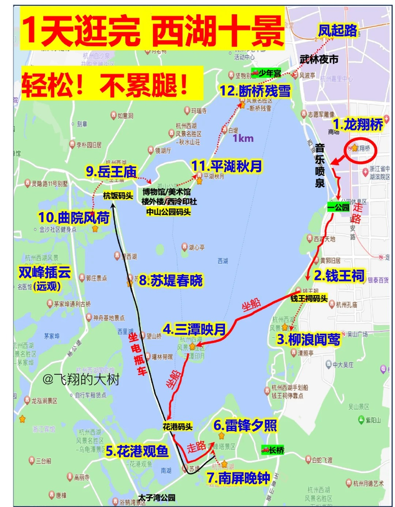

江浙沪四日行程
深圳出发，主要走杭州、乌镇、上海。
行前准备
天气情况
多云，18~26°C
需要准备薄外套、雨伞等。
景点预约
4月19日
- 西湖旅游公众号
- 钱王祠，￥15
- 岳王庙：￥25
- 美团
- 雷峰塔：￥40
- 京杭大运河夜游票+钱塘江夜游票：￥188
- 现场购票：
- 三潭印月上岛游：￥55
4月20日
- 西湖旅游公众号
- 北高峰索道：￥30
- 飞来峰：￥45
- 现场购票：
- 灵隐寺：￥30
- 法喜寺：￥10
4月21日
-
乌镇景区公众号：
- 西栅景区：￥150
- 木心美术馆：￥20
-
美团/现场：
- 游船：双人景区票+游船：￥580
-
上海豫园：
- 豫园：￥40
-
黄浦江夜游公众号
- 黄浦江游船：￥135
4月22日
- 东方明珠公众号：二球观光+旋转餐厅自助餐：￥368
- 复旦信息办公众号：复旦大学
4月19日（杭州)
深圳->杭州
| 航班信息 | 起降时间 | 起降机场 |
|---|---|---|
| 深航ZH9873 | 07:20 - 09:10 | 宝安国际机场T3 - 萧山国际机场T3 |
| 南航CZ3569 | 08:00 - 10:05 | 宝安国际机场T3 - 萧山国际机场T4 |
午餐
- 弄堂里(湖滨银泰in77C区店)：臭豆腐、甜糕、龙井虾球、叫花鸡
- 知味观（湖滨店）：三鲜小笼，脆皮糯米藕，知味馄饨
- 楼外楼（西湖景区孤山路店）：西湖醋鱼，宋嫂鱼羹，虾爆鳝面
下午
路线总览

集贤亭
观赏日落真的很美，湖中亭台，一侧还有荷塘，还有很多野鸭，以及手划船，远处是青山黛色，真的很美。

三潭印月
三潭印月，西湖十景中唯一需要乘船才可以参观的景点。三潭印月岛(又称小瀛洲)。俯瞰整个小瀛洲犹如一个“田字，园林富于空间层次变化，造成“湖中湖”“岛中岛”“园中园”的境界。岛南湖中建成有三座石塔，相传最初为苏东坡在杭疏浚西湖时所创设，月明之夜，塔中点燃灯光，真月和假月其影确实难分故得名“三潭印月”。

南屏晚钟
具体指:南屏山净慈寺傍晚的钟声，西湖十景中问世最早的景目，也是唯—个以声音命名的西湖十景。净慈寺始建于954年，是一座皇家寺庙。寺内的钟楼上层悬大梵钟，下层为净慈寺地藏殿。大梵钟高3米，口径2.3米，重10余吨。钟声敲响，振荡频率传到山上形成悠扬共振齐鸣的钟声。

苏堤春晓
苏堤南起南屏山麓，北到栖霞岭下，全长近3千米。北宋文人苏轼用疏浚西湖时挖出的湖泥堆筑了一条南北走向的长堤，后人为了纪念苏东坡治理西湖的功绩将她命名为苏堤。


西冷桥
路的尽头是海，是遇见杭州最美的转角。

音乐喷泉
19:30开始，连续播放四首歌曲，总时长15-20分钟，第一排绝佳视野，最晚18：30前要进场。

玉皇山
玉皇山至高点，可以俯瞰西湖，上面的江湖一览亭可以看到雷峰塔、西湖文化广场、望宸阁三点一线。

晚餐
武林夜市
夜晚
京杭大运河夜游+钱塘江夜游
城市灯光秀尽收眼底～
武林门码头坐船🚢
住宿
北高峰索道附近
4月20日（杭州、乌镇)
上午
线路总览

北高峰财神庙
天下第一财神庙 ，北高峰索道售票处坐索道，上山30元，下山20元，索道营业时间是8:00—16:45。

飞来峰
灵隐寺景区位于杭州西湖风景名胜区西部的山峰之间，因其周边山水禅意隐现，被称为“灵隐禅踪”，它由“灵隐寺”（见下篇）和“飞来峰”两部分构成。飞来峰，又名灵鹫峰，山体由高约168米的石灰岩构成，因慧理所述“此乃中天竺国灵鹫山之小岭，不知何以飞来？”而得名。

灵隐寺
整体是恢弘大气的感觉，一共有5个殿：大雄宝殿（求财求事业）、天王殿（保平安吉祥）、观音殿（求姻缘子嗣）、药师殿（保健康长寿）、华严殿（求事业学业）， 去之前记得提前准备好纸币和硬币，纸币投入功德箱，硬币放入许愿池。

法喜寺
寺庙整体建筑风格典雅古朴，给人一种宁静祥和的感觉。


龙井村
800亩高山茶园，鳞次栉比，西湖龙井的原产地。龙井茶3月采摘，明前龙井，是指清明节之前采的茶叶🍃，这时的茶，一芽一叶初展，滋味醇厚，清纯持久。

三分叉
三分叉，这里是最精华部分，俯瞰眺望西湖，漫山的茶园连绵不绝，视野很开阔，非常治愈。

十里琅珰
从龙井村牌坊处大约半小时即可达到，可以远眺西湖，从山上往下看漫山遍野的茶树，随便拍拍都有航拍视角

梅家坞
梅家坞是西湖龙井的核心产区之一。

午餐
梅家坞附近
杭州 -> 乌镇
- 顺风车
- 梅花坞 --> 武林广场 --> 乌镇西栅景区
住宿
西栅景区内临水名宿
入住，并预约水上集市早茶客
下午
线路总览

木心美术馆
木心美术馆展出的是画家、作家木心先生的绘画与文学作品，展馆由贝聿铭弟子设计，“风啊、水啊、一顶桥”～外观与木心先生心仪的简约美学十分契合。需要避开周一，周一闭馆。


白莲塔
可登高拍摄，塔前的江南水乡，塔后的京杭大运河

水上集市
拍热闹的水上集市超出片，旁边是明月楼茶馆，市井调调让人很放松。


晚餐
-
茅老太臭豆腐
-
书生羊肉面
-
锦记酱鸭
-
吴妈馄饨
-
永平团粉店
-
滋啦啦油煎铺
-
葱包烩
-
通济酱粽
夜晚
**乘船线路：**安渡坊码头 - 如意桥码头

4月21日（乌镇、上海)
早餐
早茶客（只要住在景区内的就能去早茶客，在游客中心办理入住后尽快预约，每天限额300名，预约不到也没关系，可以自费体验）
上午
西栅晨景
乌镇 -> 上海
从乌镇西栅1号停车场和乌镇东栅景区有发往上海人民广场的专线车，全程2.5h左右。
住宿
上海人民广场附近
下午
南京路步行街

沙美大楼
传说中的魔都绝美天台，可以直接打卡魔都三件套，还有一家可以俯瞰外滩的绝美小众露台咖啡。

上海邮政博物馆

北京东路

人民英雄纪念塔

九江路

上海城隍庙/豫园
17.30亮灯 22.00熄灯。


晚餐
城隍庙小吃
夜晚
黄浦江夜游
线路：十六铺码头一滨江大道一上海中心一上海国际会议中心一东方明珠—秦皇岛码头(调头)—北外滩一自玉兰大厦—外白渡桥一外滩万国建筑博览群—十六铺码头

上海外滩


北外滩

4月22日（上海)
上午
徐汇区Citywalk：徐家汇天主堂 -> 徐家汇书院 -> 美罗城-> 上海交通大学徐汇校区 -> 武康大楼 -> 宋庆龄故居。
徐家汇天主教堂
典型的哥特式建筑，拥有双塔尖顶和玫瑰花窗，外观非常壮观。教堂内部装饰精美，有许多精美的雕塑、彩绘装饰玻璃窗画及油画都值得驻足欣赏。
开放时间：徐家汇天主教堂的开放时间为周二至周六的9:00-16:00。


徐家汇书院
魔都2023最火的图书馆，也是目前国内最大的单体图书馆，免费入馆，参观无需提前预约。

美罗城

上海交通大学徐汇校区
徐汇校区宫殿式大门

武康路大楼
武康大楼是上海最具代表性的建筑之一，独特的船型结构是让这座大楼成了上海必打卡的项目。

宋庆龄故居
北京宋庆龄故居，始建于清朝康熙年间，有300多年历史，曾是和珅别院和末代皇帝溥仪的父亲醇亲王的府邸花园，是清代四大王府花园之一。

静安寺
静安区亦由静安寺而闻名于世。静安寺的建筑风格是仿明代以前的建筑风格，典型的代表就是斗拱的形制。

东方明珠


午餐
东方明珠旋转餐厅
下午
复旦大学
路线:东北1门➡️旦苑食堂➡️光华楼15层星空餐厅&30层观景或蹲日落➡️光草➡️光华大道➡️主席像➡️复旦大学大门➡️纪念品商店➡️燕园➡️校史馆➡️相草➡️相辉堂校训墙➡️北食


上海-深圳
| 航班信息 | 起降时间 | 起降机场 |
|---|---|---|
| 南航CZ3558 | 18:40 - 21:10 | 虹桥国际机场T2 - 宝安国际机场T3 |
| 深航ZH9538 | 19:50 - 22:15 | 虹桥国际机场T2 - 宝安国际机场T3 |